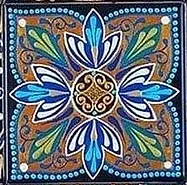
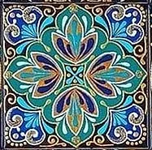
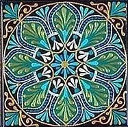

OUR
COURSES
Siddeeqa Institute offers three recurring courses that run throughout the academic year, and several courses
that are offered periodically at different times. For detailed information about each of these courses,
please visit the individual course pages as well as the FAQs section.

Traditional Islamic Education (‘Alima) Program
Duration : 5 years of full time students
Admissions Open : May
Classes Start : July/August

Flexible Essential Islamic Education Program
Duration : 2 years for full time students
Admissions Open : May and December
Classes Start : July/August and January

Qur’anic Arabic Course
Duration : 1.5 years
Admissions Open : May
Classes Start : July/August
